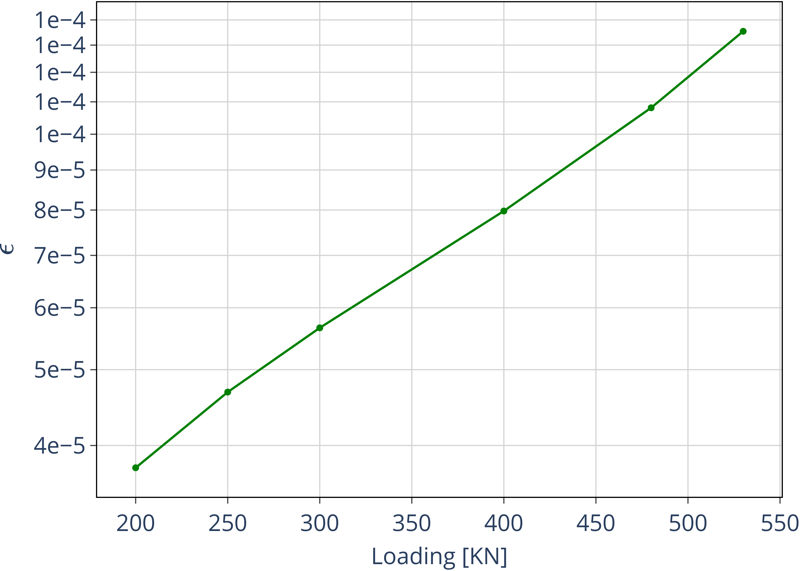

JAX-based Nonlinear Aeroelastic Simulation of Large Aircraft Models
This paper presents a new implementation for time-domain nonlinear aeroelastic simulations that has been built for performance and robustness. Leveraging on the numerical library JAX, a highly vectorised codebase is written that achieves two orders of magnitude accelerations compare to conventional implementations. This brings full-vehicle simulations to run close to if not in real-time, thus opening new possibilities for aircraft aeroelastic analysis which have traditionally been constrained to either linear, frequency domain solutions, or to their nonlinear counterparts but narrower in scope. Moreover, the approach seamlessly integrates with conventional aeroelastic load packages which facilitates the analysis of complex aircraft configurations. An extensive verification has been carried out on representative aircraft models and compared with MSC Nastran linear and nonlinear solutions. Furthermore, we demonstrate the suitability of the methodology to accurately reconstruct the full 3D solution. The algorithmic differentiation capabilities in JAX have been tested using proof of concept nonlinear static and dynamic problems.
1. Introduction
Our proposed method has two main inputs for the analysis: a linear (arbitrarily complex) FE model, and aerodynamic influence coefficient matrices that provide the mapping between FE states and the corresponding aerodynamic forces (either in modal or in physical coordinates). The latter are obtained herein from the Doublet Lattice Method (DLM) and a rational function approximation (RFA) &ROGER1975 to transform to the time domain. We have also presented a more efficient data-driven approach that circumvents the additional states added by the RFA in &PALACIOS2023b and the approach would also be suitable for more accurate Computational Fluids Aerodynamics (CFD). Using the 3D FE model, a skeleton-like substructure along the main load paths is derived, on which modal shapes and nonlinear couplings are evaluated in intrinsic variables (velocities and strains). They conform a basis of a Galerkin-projection of the geometrically-nonlinear 1D domain after which the projected equations are solved in time-domain. Advantages of the approach are its direct and accurate map between the 3D and 1D domains, as it only requires of a modal condensation that is already available in many industrial aeroelastic models to link the structural model to the aerodynamic loading.
This is unlike stick models which need of various post-processing steps to build the equivalent stiffness and mass models.
Furthermore, we show how the full 3D solution using the nonlinear 1D solution is computed to a good accuracy by reconstructing the cross-sectional elements and applying a Radial Basis Function (RBF) interpolation to the remaining nodes in the domain.
A well established formulation effectively applied to industrial-scale aeroelastic models and now combined with a highly vectorised implementation in JAX results in an extremely efficient nonlinear aeroelastic solver. The overall procedure has been implemented in what we have named as \emph{Nonlinear Modal Reduced Order Model} (NMROM).
The structure of the rest of the paper is as follows. Sec. 2 presents a summary of the mathematical description that conforms the backbone behind the computational implementation of \texttt{FEM$_4$INAS} (Finite-Element-Models for Intrinsic Nonlinear Aeroelastic Simulations), the high performance software for aeroelasticity we have built. Sec. 3 shows the verification cases that cover the static and dynamic structural response of of a simplified aircraft model, and the aeroelastic response to gusts of a full aircraft configuration. The improvements in performance are highlighted in all of the examples.
Lastly, sec. 4 summarises the the achievements and further developments planned for future work.
2. Theory and implementation
In this section we briefly describe the backbone theory of the proposed methods for nonlinear aeroelasticity modelling. For further details, see &CEA2021, &CEA2023. A major contribution with respect to our previous works is a new computational implementation that achieves accelerations of over 2 orders of magnitude compared to standard implementations1. Furthermore, a highly modular, flexible architecture based on software design patterns has been put in place &CEA2024. The key enabler was moving from standard Python to a highly vectorised, JAX-based numerical implementation. JAX is a Python library designed for high-performance numerical computing with focus on machine learning activities \cite{jax2018github}. Next we described the main formulation that leads to a geometrically nonlinear enhancement of generic aircraft models and its integration into an aeroelastic framework, along with some implementation details.
2.1. Airframe idealisation
An illustration of the overall solution process is presented in Fig. 1.
We start with a global FE model of the airframe. It is common practice for large-scale aeroelastic models to feature lumped masses along a load path axis that are attached to their corresponding cross-sectional nodes via interpolation elements. With those characteristics a reduced model can be obtained from a static or dynamic condensation that captures well the stiffness and inertia properties in the condensed matrices, \(\pmb{K}_a\) and \(\pmb{M}_a\).
A database of Aerodynamic Influence Coefficient matrices (AICs) is also needed as input; this may be given in a CFD-based ROM &RIPEPI2018a, in time-domain panel method, as in the Unsteady Vortex Lattice (UVLM) &Maraniello2019, or in frequency domain, as in the Doublet Lattice (DLM), in which case a RFA in used to amend the data for time-domain simulations.
The modal-based aerodynamics and the condensed matrices of the structure are input into a our analysis framework that builds the nonlinear dynamics of the condensed model without having to call back the stiffness and mass matrices. To achieve this a formulation based on velocities and strains in the material frame of reference is employed.
After the state of the condensed model has been solved for, the full 3D state can be reconstructed: firstly the displacements of the cross-sectional nodes linked to the reduced model via the interpolation elements are computed using the positions and rotations of the latter; secondly, Radial Basis Functions (RBFs) kernels are placed on those cross-sections, thus building an intermediate model that is utilised to extrapolate the positions of the remaining nodes in the full model. We demonstrate in this work that this process yields accurate results on representative aircraft structures when compared to simulations with the full FEM, thus paving the way for a more detailed, multidisciplinary analysis: first with the addition of CFD as the aerodynamic solver, and second with the transfer of the full deformed state back to the original FE solver to study other phenomena such as buckling.
Figure 1: Workflow of the solution process
2.1.1. Dynamic condensation of linear FE models
\label{sec:dynamic_condensation}
Model order reduction techniques aim to increase computational efficiency by reducing the size of the problem while maintaining its fundamental characteristics. Regarding industrial applications in the field of aeroelasticity, ROMs are very important, even when the majority of the analysis is linear, due to the need for fast simulations and the very large models that can surpass the millions of DoF. In aircraft loads analysis, trim and stability studies, it is common practice condensing the (linear) full-FE models into the major load paths of the aircraft, to reduce the total number of DoF to a few hundreds. That is Step 2 in figure . Herein we not only use a condensation approach to reduce the size of the model, but also to represent a structure that can be modelled as a one-dimensional domain –making use of the slenderness of transport aircraft main components, where the span of wetted-surfaces and the fuselage length take predominance over the other dimensions.
In order to obtain the condensed model, the degrees of freedom of the full model are divided into those on active (or master) nodes, located along the load path \(\Gamma\), and those of the omitted (or slave) nodes. The displacement vector can therefore be reordered as, \(\pmb{u}_n= \left(\pmb{u}_a^\top \;\pmb{u}_o^\top\right)^\top\), and similarly for the LNMs of the unloaded structure \(\pmb{\Phi}=[\pmb{\Phi}_a^\top \; \pmb{\Phi}_o^\top]^\top\), so that the eigenvalue problem of \(\bm{K}\) and \(\bm{M}\) is arranged as,
A linear dependency is now assumed between the omitted and the active degrees of freedom,
\begin{equation}\label{eq2:Toa} \pmb{\Phi}_o = \pmb{T}_{oa} \pmb{\Phi}_a \end{equation}with \(\pmb{T}_{oa} \in \mathbb{R}^{o\times a}\) the transformation matrix between both sets. The quality of the transformation is determined by its accuracy in capturing a subset of interest of the full-system LNMs, which is linked to the spatial sampling that \(\pmb{\Phi}_a\) introduces on the full domain. In general, the condensation is dependent on the frequencies and forms a nonlinear eigenvalue problem where each LNM, with natural frequency, \(\omega_j\), has one transformation matrix,
\begin{equation}\label{eq2:transformation_exact} \pmb{T}_{oa}(\omega_j) = (\pmb{K}_{oo}-\omega^2_j \pmb{M}_{oo})^{-1}( \pmb{K}_{oa}- \omega_j^2 \pmb{M}_{oa}) \approx -(\pmb{K}_{oo}^{-1}+\omega^2_j\pmb{K}_{oo}^{-1}\pmb{M}_{oo}\pmb{K}_{oo}^{-1})(\pmb{K}_{oa}-\omega^2_j\pmb{M}_{oa}) \end{equation}This is the so-called exact-condensation matrix, where we have also introduced Kidder's mode expansion &Qu2010 as &CEA2021b. The first-order approximation of this equation is attained by letting \(\omega_j =0\), thereby removing inertia effects. This results in a static condensation, proposed by Guyan and Irons in 1965 &Guyan1965, still one of the most popular condensation methods today, also known as Guyan reduction. Note that when the mass model consists only of lumped masses on the active degrees of freedom, \(\pmb{M}_{oo} = \pmb{M}_{oa} = \pmb{0}\), Guyan reduction is the exact condensation.
2.1.2. Kinematics of aircraft main load-paths
This process of enhancing the linear 3D model with geometric nonlinearities along the slender dimension relies on the main assumption that cross-sectional deformations of the solid body in the reference configuration are not coupled to the main dimension as moving through configurations in time. As a result, distributed internal stresses act only through the normal of the cross-sections in the undeformed configuration \cite{CEA2021a}. Applying the appropriate integration over the cross sectional reference area of the distributed traction forces, a Cosserat rod model is built, where the deformed state on the full domain is approximated by a deformable space curve \(\mathcal{P}\) – identified with the aircraft major load-paths. The primary variables are the local inertial (linear and angular) velocities, grouped in the variable \(\bm{x}_1(s, t)\), and internal force and moments combined in \(\bm{x}_2(s, t)\). They are function of the 1D spatial dimension, \(s\), and time, \(t\). Applied forces and moments per unit length, \(\bm{f}_1\), come naturally as follower forces and moments respectively. The equations are well described in \cite[Ch. 8]{PALACIOS2023}.
Constitutive properties are given by the compliance matrix, \(\bm{\mathcal{C}}\), relating sectional forces and moments to strains and curvatures and the sectional mass matrix, \(\bm{\mathcal{M}}\), linking velocities and momenta. Finding a good approximation to these matrices is a common challenge in formulations that aim to build nonlinear 1D models from full FE models. This work circumvents having to calculate explicit expressions of \(\bm{\mathcal{C}}\) and \(\bm{\mathcal{M}}\) by solving the equations in modal space and linking them to the modal shapes and their derivatives as first described in &PALACIOS2012.
\begin{subequations}\label{eq2:intrinsic_eqs} \begin{align} \mathcal{M}\dot{\pmb{x}}_1-\pmb{x}_2'-\pmb{\mathsf{E}}\bm{x}_2+ \lo_1(\pmb{x}_1)\mathcal{M}\pmb{x}_1 + \lo_2(\pmb{x}_2)\mathcal{C}\pmb{x}_2 & = \pmb{f}_1 \\ \mathcal{C}\dot{\pmb{x}_2}-\pmb{x}_1' + \pmb{\mathsf{E}}^\top\pmb{x}_1- \lo_1^\top(\pmb{x}_1)\mathcal{C}\pmb{x}_2 & = \pmb{0} \end{align} \end{subequations}The linear operators, \(\lo_1\), \(\lo_2\), and the matrix \(\pmb{\mathsf{E}}\) are defined as,
\begin{equation} \lo_1 (\pmb{x}_1) = \begin{bmatrix} \tilde{\pmb{\omega}} & \pmb{0} \\ \tilde{\pmb{\ve}} & \tilde{\pmb{\omega}} \end{bmatrix} \hspace{0.5cm} ; \hspace{0.5cm} \lo_2 (\pmb{x}_2)= \begin{bmatrix} \pmb{0} & \tilde{\pmb{f}} \\ \tilde{\pmb{f}} & \tilde{\pmb{m}} \end{bmatrix} \hspace{0.5cm} ; \hspace{0.5cm} \pmb{\mathsf{E}}= \lo_1 \begin{pmatrix} \begin{bmatrix} 1 \\ \bm 0_5 \end{bmatrix} \end{pmatrix} \end{equation}The above description is geometrically-exact with quadratic nonlinearities only. It easily allows
The intrinsic modes are introduced and the projection of the state variables is such \(\pmb{x}_1 = \pmb{\phi}_1\pmb{q}_1\) and \(\pmb{x}_2 = \pmb{\phi}_2\pmb{q}_2\).
and the equations of motion take the following form:
\begin{equation} \label{eq2:sol_qs} \begin{split} \dot{\pmb{q}}_{1} &= \pmb{\omega} \odot \pmb{q}_{2} - \pmb{\Gamma}_{1} \pmb{:} \left(\pmb{q}_{1} \otimes \pmb{q}_{1} \right) - \pmb{\Gamma}_{2} \pmb{:} \left( \pmb{q}_{2} \otimes \pmb{q}_{2} \right) + \bm{\eta} \\ \dot{\pmb{q}}_{2} &= -\pmb{\omega} \odot \pmb{q}_{1} + \pmb{\Gamma}_{2}^{\top} \pmb{:} \left( \pmb{q}_{2} \otimes \pmb{q}_{1} \right) \end{split} \end{equation}where \(\odot\) is the Hadamard product (element-wise multiplication), \(\otimes\) is the tensor product operation and \(\pmb{:}\) is the double dot product2. The form of the equations in compact tensorial notation is in fact the way they have been implemented and vectorised. This description is geometrically-exact, with nonlinearities encapsulated in the modal couplings of the third-order tensors \(\pmb{\Gamma}_{1}\) and \(\pmb{\Gamma}_{2}\) (the former introduces the gyroscopic terms in the dynamics and the latter introduces the strain-force nonlinear relation). \(\pmb{\eta}\) is the modal projection of the external forcing terms. They are computed as integrals along the load-path 1D domain as an inner product: \(\langle \pmb{u},\pmb{v} \rangle = \int_\Gamma \pmb{u}^\top \pmb{v} ds\), for any \(\pmb{u}\in\mathbb{R}^6\) and \(\pmb{v}\in\mathbb{R}^6\):
where \(\lo_1\) and \(\lo_2\) are linear operators, \(\pmb{\psi}_1 = \bm{\mathcal{M}}\pmb{\phi}_1\) and \(\pmb{\psi}_2 = \bm{\mathcal{C}}\pmb{\phi}_2\) are also cast as momentum and strain mode shapes and approximated using the Linear Normal Modes of the FE model. In other words, each natural vibration mode can be uniquely expressed in terms of velocity, force/moment, momentum, or strain variables. While those would be redundant in a conventional linear vibration analysis, they will enable to identify all the coefficients in Eqs. \eqref{eq2:sol_qs}.
2.2. Time domain unsteady aerodynamics
The doublet-lattice-method (DLM) \citep{rodden1969,Rodden2011book} represents a numerical solution to equation \eqref{eq3:kernel}, where the main surfaces are discretised into boxes and doublet lines placed at the quarter chord of each box or panel, while the downwash, \(\hat{w}(x,y,0)\), is evaluated at the 3/4 chord midspan (note the change in notation from the previous section in the upwash, \(\hat{w}_u\), and the downwash, \(\hat{w}_d\), related as \(\hat{w}_u = - \hat{w}_d\) depending on a re
A rational-function approximation (RFA) is used to transform the frequency-domain physics into the time-domain, based on the classical method by Roger \citep{Roger1977}. Accordingly, the GAFs in Eq. \eqref{eq3:eta_ah} are approximated here for a given Mach number as,
\begin{equation}\label{eq3:rogers_approx} \bm{Q}_{HH}(k) = \pmb{\mathcal{A}}_0 + (ik)\pmb{\mathcal{A}}_1 + (ik)^2\pmb{\mathcal{A}}_2 + \sum_{p=1}^{N_p}\frac{ik}{\gamma_p + ik}\pmb{\mathcal{A}}_{p+2} \end{equation}\(\pmb{\mathcal{A}}_0\) is just \(\bar{\bm{Q}}_{HH}(0)\). For a set of reduced frequencies \(k_n\) and a fixed Mach number, \(\bar{\bm{Q}}_{HH}(k_n)\in\mathbb{R}^{N_m\times N_m}\) matrices are computed and the \(\pmb{\mathcal{A}}_i\) obtained through a least square fit after the following system is formed,
The first three terms are known as aerodynamic stiffness, damping and inertia, respectively, and the terms in the expansion are known as aerodynamic lags, which describe an exponential decay response under step function. All matrices on the right hand-side of \eqref{eq:roger} are real.
A similar approach is followed to include gust loads. The (dimensional) frequency-domain upwash, \(\bar{w}_{g}\), on a panel \(j\) is %
\begin{equation} \bar{w}_{gj}(\omega) = \left(\bm{n}_j \cdot {\bar{\bm{v}}_g}\right) e^{-i\omega(\bm{x}_j-\bm{x}_0)/U_\infty} \end{equation}where $\bm{n}j $ is the normal to panel \(j\), \(\bm{v}_g(t)\) is the velocity vector of the gust (usually with non-zero components in the z-direction for a normal gust and in y-direction for a lateral gust), \(\bm{x}_j\) are the spatial coordinates of the control point in panel \(j\), and \(\bm{x}_0\) the position of the gust origin. The normal of each panel could be updated as the structure deforms for a complete nonlinear analysis of the gust. However this would entail updating a complex panel geometry for a very short period of time and it is deemed a second order effect here, so no updating of \(\bm{n} \cdot \bm{v}_g\) has been implemented so far. In particular, ''1-cos'' gust profiles are considered.
The forces in nondimensional time, \(t_s = \frac{U_\infty t}{c/2}\), are obtained after applying the inverse Fourier transform to Roger's approximation, Eq. \eqref{eq3:rogers_approx}, and to the definition of the aerodynamic states, Eq. \eqref{eq3:rogers_approx_poles}. The final expression for the aerodynamic modal forces and states in time domain are,
\begin{align} \bm{\eta}_a &= \tfrac12\rho U_\infty^2 \left( \pmb{\mathcal{A}}_0\bm{q}_0 +\frac{c}{2U_\infty}\pmb{\mathcal{A}}_1 \bm{q}_1 +\left(\frac{c}{2U_\infty}\right)^2 \pmb{\mathcal{A}}_2\dot{\bm{q}}_1 + \sum_{p=1}^{N_p} \pmb{\lambda}_p\right) \\ \dot{\bm{\lambda}}_p &= -\frac{2U_\infty \gamma_p }{c}\bm{\lambda}_p + \pmb{\mathcal{A}}_{p+2}\bm{q}_1 \qquad \textup{for} \qquad p=1,\ldots,N_p \end{align} \begin{equation}\label{eq3:eta_full} \begin{split} \bm{\eta}_a = \tfrac12\rho_\infty U_\infty^2 & \left(\vphantom{\sum_{p=1}^{N_p}} \pmb{\mathcal{A}}_0\bm{q}_0 +\frac{c}{2U_\infty}\pmb{\mathcal{A}}_1 \bm{q}_1 +\left(\frac{c}{2U_\infty}\right)^2 \pmb{\mathcal{A}}_2\dot{\bm{q}}_1 \right. \\ & \left. + \pmb{\mathcal{A}}_{g0}\bm{v}_g +\frac{c}{2U_\infty}\pmb{\mathcal{A}}_{g1} \dot{\bm{v}}_g +\left(\frac{c}{2U_\infty}\right)^2 \pmb{\mathcal{A}}_{g2}\ddot{\bm{v}}_g + \sum_{p=1}^{N_p} \pmb{\lambda}_p \right) \end{split} \end{equation}The term \(\bm{q}_0\) is the displacement modal amplitude and \(\bm{q}_1\) is the velocity modal amplitude, as given by eq. \eqref{eq2:q1-q0}; note both displacement and velocity amplitudes are used to define the inputs to the aerodynamic subproblem. For convenience in the formulation the aerodynamic states are rescaled with the dynamic pressure such as $\bm{\lambda}p → ½ρ U\i
2.3. Nonlinear aeroelastic system
The full aeroelastic solution is described extending Eq. \eqref{eq2:sol_qs} with gravity forces, \(\bm{\eta}_g\), aerodynamic forces and gust disturbances, \(\bm{v}_g\). Control states can also be included &CEA2021a, but they are not necessary for this work. For a set of reduced frequencies and a given Mach number, the DLM (or a higher fidelity aerodynamic method) yields the Generalised Aerodynamic Forces (GAFs). The current implementation uses Roger's rational function approximation to those GAFs, which results in the follower modal forces:
The coupling of the structure and aerodynamic equations combined with the aerodynamic lags gives the final ODE system:
\begin{equation} \label{eq2:sol_qs} \begin{split} \dot{\pmb{q}}_{1} &= \hat{\pmb{\Omega}} \pmb{q}_{2} - \hat{\pmb{\Gamma}}_{1} \pmb{:} \left(\pmb{q}_{1} \otimes \pmb{q}_{1} \right) - \hat{\pmb{\Gamma}}_{2} \pmb{:} \left( \pmb{q}_{2} \otimes \pmb{q}_{2} \right) + \hat{\bm{\eta}} \\ \dot{\pmb{q}}_{2} &= -\pmb{\omega} \odot \pmb{q}_{1} + \pmb{\Gamma}_{2}^{\top} \pmb{:} \left( \pmb{q}_{2} \otimes \pmb{q}_{1} \right) \\ \dot{\bm{\lambda}}_{p} &= \hat{\bm{\mathcal{A}}}_{p+2}\pmb{q}_{1} + \hat{\bm{\mathcal{A}}}_{p+2}\dot{\pmb{v}}_g -\frac{2U_\infty\gamma_p}{c}\bm{\lambda}_{p} \end{split} \end{equation}
in this system the aerodynamic added-mass effect has been moved to the left hand side such that \(\bm{\mathrm{A}}_2 = (\pmb{I} - \frac{\rho c^2}{8}\pmb{\mathcal{A}}_2)^{-1}\), and it couples all DoF in \(\pmb q_1\). Thus the natural frequency terms become \(\hat{\pmb{\Omega}} = \bm{\mathrm{A}}_2 \textup{diag}(\pmb{\omega})\) and the nonlinear terms \(\hat{\pmb{\Gamma}} = \bm{\mathrm{A}}_2 \bm{\Gamma}\). The effect of all external forces, aero, \(\bm{\eta}_a\), gravity, \(\bm{\eta}_g\), and others, \(\bm{\eta}_f\), are combined in such that \(\hat{\bm{\eta}} = \bm{\mathrm{A}}_2 \left( \left( \bm{\eta}_a - \frac{\rho c^2}{8} \pmb{\mathcal{A}}_2\dot{\bm{q}}_1 \right) + \bm{\eta}_g + \bm{\eta}_f \right)\).
3. Examples
The cases presented are a demonstration of our solution approach to manage geometric nonlinearities, the accuracy of the solvers when compared to full FE simulations, and the computational gains that can be achieved. All computations are carried out on a single core of the same CPU, an i7-6700 with 3.4 GHz clock speed.
3.1. Structural verification of a representative configuration
\label{sec:representative_aircraft} A representative FE model for aeroelastic analysis of a full aircraft without engines is used to demonstrate the capabilities of the current methodology on large finite-element models. The aircraft’s main wing is composed of wing surfaces, rear and front spars, wing box and ribs. Flexible tail and rear stabiliser are rigidly attached to the wing. Structural and aerodynamic models are shown in Fig. \ref{fig:SailPlane}. This is a good test case as it is not very complex yet representative of aircraft FE models and it is available open source.
3.1.1. Geometrically nonlinear static response
The static equilibrium of the aircraft under prescribed loads is first studied with follower loads normal to the wing applied at the tip of each wing. The response for an increasing load stepping of 200, 300, 400, 480 and 530 KN is computed. Nonlinear static simulations on the original full model (before condensation) are also carried out in MSC Nastran and are included. The interpolation elements in Nastran are used to output the displacements at the condensation nodes for direct comparison with the NMROM results. To quantify the difference between both sets of results, tip displacements, in global coordinates, for the 530 KN load and the full model Nastran calculations are \(u_x = -0.217\) m \(u_y = -1.348\) m, \(u_z = 7.236\) m; while NMROM calculations yield \(u_x = -0.219\) m \(u_y = -1.352\) m, \(u_z = 7.249\) m. This represents an error of 0.19\(\%\) for a 25.6\(\%\) tip deformation of the wing semi-span, \(b = 28.8\) m. Geometric nonlinearities are better illustrated by representing a sectional view of the wing as in Fig. 2, where deformations in the z-direction versus the metric \(S = \sqrt{x^2+y^2}\) are shown. MSC Nastran linear solutions are also included to appreciate more clearly the shortening and follower force effects in the nonlinear computations.
Figure 2: Static geometrically-nonlinear effects on the aircraft main wing
The tolerance in the Newton solver was set to \(10^{-6}\) in all cases. A convergence analysis with the number of modes in the solution is presented in 3. 5, 15, 30, 50, 100 modes are used to build the corresponding NMROMs. The error metric is defined as the L-2 norm divided by the total number of nodes (only the condenses ones in this case): \(\epsilon = ||u_{NMROM} - u_{NASTRAN}||/NumNodes\).

Figure 3: Modal convergence in the static solution of the Sail Plane
The 3D structural response has been reconstructed using the approach in 1. The nodes connected by the interpolation elements (RBE3s) to the ASET solution are reconstructed first and subsequently a model with RBFs kernels is used to extrapolate to the rest of the nodes in the full FE. A very good agreement is found against the Nastran 400 solution. Fig. 4 shows the overlap in the Nastran solution (in blue) and the NMROM (in red) for the 530 KN loading.


The error metric of this 3D solution is also assessed in Fig. 4, for the solution with 50 modes and comparing with the previous error metric in the ASET model. The discrepancy metric is even smaller, which is explained because there are more nodes in the 3D model that reduced the average per node. The important point is that there is no accuracy loss in the process of reconstructing the 3D solution.

Figure 4: 3D discrepancy comparison between full FE and NMROM solutions
Next we compare the computational times for the various solutions presented in this section in Table 1.
| NMROM (modes: 5, 15, 30, 50, 100) | NASTRAN 400 | |
|---|---|---|
| Time [s] | 6.88, 6.98, 6.94, 7.42, 7.79 | 4920 |
In order to validate the AD a whereby the load stepping shown above becomes a pseudo-time interpolation load where the variable \(\tau\) controls the amount of loading and we look at the variation of the tip displacement as a function of this \(\tau\). Table 2 shows a very good agreement with a finite differences with an epsilon of \(10^{-3}\).
| \(\tau\) | \(f(\tau)\) | \(f'(\tau)\) [AD] | \(f'(\tau)\) [FD] |
|---|---|---|---|
| 1.5 | 2.81 m | 0.700 | 0.700 |
| 3.5 | 4.527 m | 1.344 | 1.344 |
| 5.5 | 6.538 m | 0.623 | 0.623 |
3.1.2. Large-amplitude nonlinear dynamics
This test case demonstrates the accuracy of the NMROM approach for dynamic geometrically-nonlinear calculations and was first introduced in &CEA2021. The right wing of Fig. \ref{fig:SailPlane} is considered and dynamic nonlinear simulations are carried out and compared to MSC Nastran linear and nonlinear analysis (SOL 109 and 400, respectively) on the full FE model. First
A force is applied at the wing tip with a triangular loading profile, followed by a sudden release of the applied force to heavily excite the wing. The force profile is \(f(a, b) = a+\frac{1-a}{b}t \text{if \(t \leq b\) else 0.}\) and the force at the tip is \(f_{tip} = [-2\times 10^5, 0., 6\times 10^5]f(0.05, 4)\). The dynamic response is presented in Fig. 5, where results have been normalised with the wing semi-span (28.8 m.). As expected, linear analysis over predicts vertical displacements and does not capture displacements in the \(x\) and \(y\) directions. NMROMs were built with 5, 15, 30, 50 and 100 modes. A Runge-Kutta four is used to march the equation in time with time steps corresponding to the inverse of the largest eigenvalue in the NMROM, i.e.

Figure 5: Span-normalised tip $x-$displacements

Figure 6: Span-normalised tip $z-$displacements
As in the previous example, the 3D shape of the model is retrieved and compared against the full nonlinear dynamic solution as illustrated in Fig. 7 (Nastran solution in yellow and NMROM with 50 modes in blue).

Figure 7: Wing Sail Plane 3D dynamic comparison
Next we look at the error of the dynamic simulation with the same error metric employed above that now evolves in time. Integrator errors accumulate and discrepancies grow with time but still remain small.
Figure 8: L-2 norm per node differences between Nastran full FE and NMROM
An impressive reduction of computational time is achieved in the new implementation as highlighted in Table 3.
with a small time step of 0.001 seconds takes \textbf{10.9 seconds} while the nonlinear response of the full model in \textbf{Nastran took 1 hour 22 minutes.}
| NMROM (modes: 5, 15, 30, 50, 100) | NASTRAN 400 | |
|---|---|---|
| Time [s] | 2.81, 3.21, 5.08, 7.33, 145.27 | 4920 |
| \(\alpha\) | \(f(\alpha)\) | \(f'(\alpha)\) [AD] | \(f'(\alpha)\) [FD] |
|---|---|---|---|
| 0.5 | \(1723.2 \times 10^3\) | \(3587.71 \times 10^3\) | \(3587.77 \times 10^3\) |
| 1.0 | \(3624.4 \times 10^3\) | \(3735.26 \times 10^3\) | \(3735.11 \times 10^3\) |
| 1.5 | \(5608.3 \times 10^3\) | \(3957.81 \times 10^3\) | \(3958.31 \times 10^3\) |
3.2. Dynamic loads on an industrial configuration
The studies presented in this section are based on a reference configuration developed to industry standards known as XRF1, which is representative of a long-range wide-body transport airplane. The version with a wing-tip extension in \cite{CEA2023} is employed to verify a gust response against NASTRAN linear solution. Fig. \ref{fig8:xrf1-model} shows the full aeroelastic model split up into the structural, mass and aerodynamic components. The FE model contains a total of around 177400 nodes, which are condensed into 176 active nodes along the reference load axes through interpolation elements. A Guyan or static condensation approach is used for the reduction. The aerodynamic model contains \(\sim 1,500\) aerodynamic panels.
A verification exercise is introduced first by applying two 1-cos gust shapes at a very low intensity, thus producing small deformations and a linear response. The flow Mach number is 0.81. A first gust is applied that we name as G1 of length 67 m and peak velocity 0.141 m/s, and a second gust, G2, of 165 m and peak velocity of 0.164 m/s. Fig. 9 shows the normalised wing-tip response with our NMROM that accurately reproduces the Nastran 146 solution based on the full FE model.

Figure 9: Wing-tip response to low intensity gust

Figure 10: \(y\) Wing-tip response to low intensity gust

Figure 11: \(z\) Wing-tip response to low intensity gust
Next we increase the gust intensity by a factor of 200 in order to show the effects of geometric nonlinearities that are only captured by the nonlinear solver. As seen in Fig. 12, there are major differences in the \(x\) and \(y\) components of the response due to follower and shortening effects, and a slight reduction in the $z$-component. These are well known geometrically nonlinear effects, the main contribution here is the ability to add them to an existing linear Nastran model with industrial features.

Figure 12: Wing-tip response to high intensity gust, \(x-\) component

Figure 13: Wing-tip response to high intensity gust, \(y-\) component

Figure 14: Wing-tip response to high intensity gust, $z-$component
In previous examples the same Runge-Kutta 4 (RK4) time-marching scheme is used and now we explore the dynamic solution with other solvers to assess their accuracy and also their computational performance. Two explicit ODE solvers, RK4 and Dormand-Prince's 5/4 method, and two implicit, Euler first order and Kvaerno's 3/2 method, are compared. In order to justify the use of implicit solvers we reduce the time step from 0.005 to 0.02 seconds, at which point both explicit solvers diverge.

Figure 15: Comparison of solvers

Figure 16: Comparison of solvers
The computational times of the different solvers are shown in Table 5. The implicit solvers have taken one order of magnitude more time to run despite the reduction in time step. Therefore the insight we get on this is that for moderately large frequency dynamics, the explicit solvers offer a much efficient solution. The turning point for using implicit solvers would be when the largest eigenvalue in Eqs. \ref{eq2:sol_qs} led to prohibitly small time steps. In terms of the Nastran solution, we are not showing the whole simulation time because that would include the time to sample the DLM aerodynamics which are input into the NMROM as a post-processing step. Instead, the increase in time when adding an extra gust subcase to an already existing analysis is shown, i.e. the difference between one simulation that only computes one gust response and another with two. It is remarkable that the explicit solvers are faster on the nonlinear solution than the linear solution on an industrial software. Besides our highly efficient implementation, the main reason for this might be the Nastran solution involves a frequency domain analysis and then an inverse Fourier transform to obtain the time-domain results.
| NMROM [l3, l5, l6, l7, l8] | \(\Delta\) NASTRAN 146 | |
|---|---|---|
| Time [s] | 22.49, 18.94, 18.8, 273.95, 847.89 | 4920 |
4. Conclusions
Footnotes:
:Both the new implementation and the examples of this paper can be found at https://github.com/ACea15/FEM4INAS.
The double dot product represents a contraction of the last two indexes of the first tensor with the first two indexes of the second one; it however needs further specification as two alternative definitions can be adopted and here we opt for the following: \(\pmb{a} \pmb{:} \pmb{b} = a_{..ij} b_{ij..} \). This has implications on the definition of the transpose of \(\bm{\Gamma}_2 \) in the second equation since for high order tensors multiple transpose operators can be defined. Consistency is achieved by ensuring the dot product operation satisfies the following: \( \pmb{x} \cdot \left(\bm{\Gamma} \pmb{:} \left( \pmb{y} \otimes \pmb{z} \right) \right) = \pmb{y} \cdot \left(\bm{\Gamma}^{\top} \pmb{:} \left(\pmb{z} \otimes \pmb{x} \right) \right) \), which leads to the transpose of the third order tensor, \( \bm{\Gamma} = \Gamma^{ijk} \), as \( \bm{\Gamma}^{\top} = \Gamma^{jki} \).